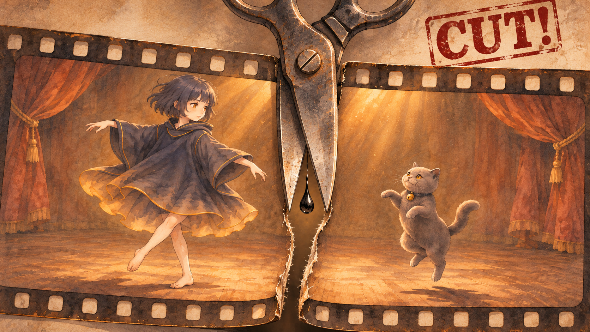
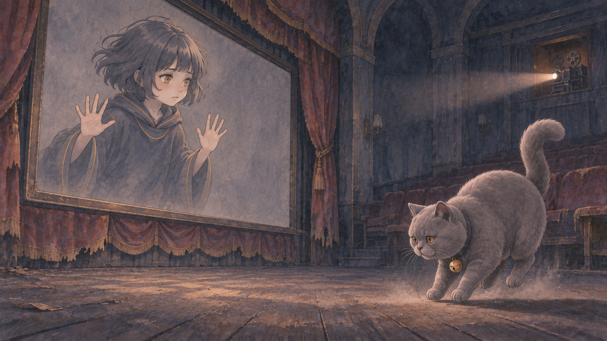
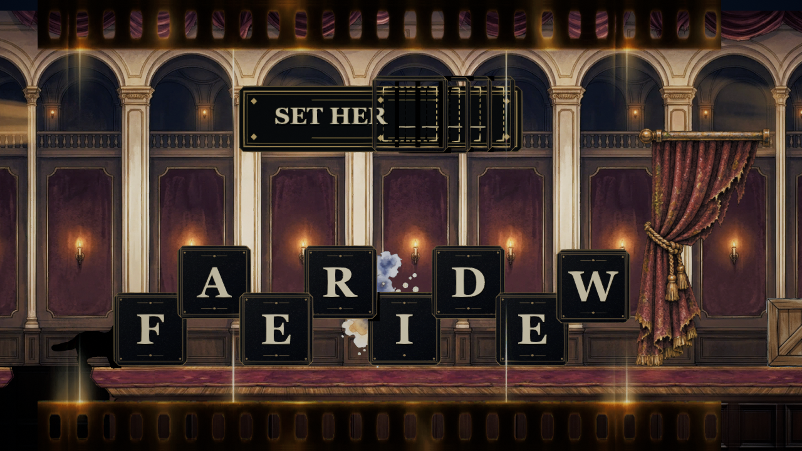
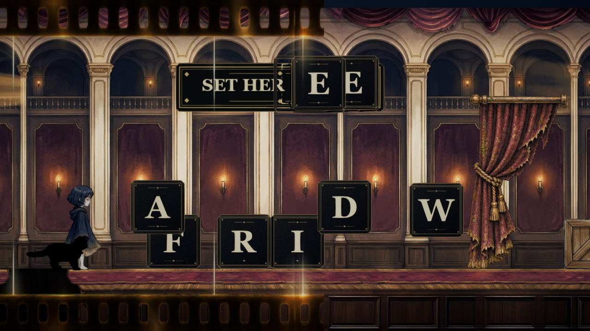

BACKSTAGE · 3D
The cat moves the set.
Push a crate or stage prop into the projector beam. In the real theatre, it is an ordinary object. On screen, it becomes a bridge.

A Glass Box development log
A little cat in the wings. A girl trapped in the film. One lantern connecting two worlds that were never meant to touch.
A film with a missing ending
When a film tears, a girl is stranded inside its painted world and her cat is left behind in the theatre. They can only make it forward together: the cat moves real objects beyond the screen; the girl turns their shadows into paths, switches, and answers.
The jam theme was Director’s Cut. We took it literally: what if changing the frame changed the world—and the characters could help each other rewrite it?



Not a companion. A co-director.
The puzzle lives in the gap between a solid object and the shape it casts onto celluloid.
BACKSTAGE · 3D
Push a crate or stage prop into the projector beam. In the real theatre, it is an ordinary object. On screen, it becomes a bridge.
THE PROJECTOR · BOTH
Light carries the object across the boundary. The player reads the same puzzle from two sides of the screen.
INSIDE THE FILM · 2D
Use the new shadow to reach a lever, release a rail clamp, or open a way for the cat. Then the 3D space changes too.
The design test: every major beat should make the player understand something new about the connection between screen and stage.
Day 0 → Day 4 · A solo production log
A transparent record of the jam: engine setup, the two-world core, lighting fixes, a custom animated cat, three distinct film puzzles, and the final Shipping build.
FOUNDATION
Set up Unreal Engine 5.9 and the unreal-mcp bridge, then connected AI asset generation, headless Blender cleanup, and Unreal import into one repeatable workflow. Performance settings were tuned for a 6 GB graphics card.
THE TWO-WORLD CORE
Built the C++ gameplay foundation for the 3D cat, the 2D girl, and the projector. A real prop in the spotlight casts a perspective silhouette onto the film plane, where it becomes a platform the girl can use.
THE FIRST PLAYTEST
The first playtest exposed blown-out lighting and passages too narrow for the cat. A stencil-masked painterly post-process kept the 3D backstage moody while preserving crisp 2D screens; clearances and transitions were checked across the route.
THE WORLD TAKES SHAPE
Assembled the continuous InsideSpacesLevel and rigged the stylized cat in Blender. Retargeting produced 33 gameplay animation clips, while a four-layer MetaSounds score let backstage, film, lantern, and threat shape the soundscape.
THREE REELS · THREE PUZZLES
The reels became three distinct challenges: arrange the “SET HER FREE” intertitle, match boiler pressure with valves, then ring wind bells to lower a drawbridge. Hyper3D Rodin props, a spinning fan, an interactive lever, clapperboard menus, and a sunset finale completed the cut. A Shipping-only crash and a cooker blocker were tracked down and fixed.
A real iteration from the build
The intertitle puzzle began with loose letters and overlapping tiles. After the playtest pass, the arrangement became readable and the girl could move through the scene.
Drag the handle to reveal the solved frame.


Evidence from the playable route
Recent playable captures: the opening sequence, a solved film puzzle, and the finished sunset finale.
Human-directed. AI-assisted. Tested in-engine.
This is the part we want to keep visible. AI made iteration faster, but every useful result still had to fit the game, survive in Unreal, and make the next player action clearer.
The human chose the theme interpretation, the two-world mechanic, the mood, and what a player should understand in each scene.
AI assistance supported concept exploration, code and script drafts, and production notes. Generated material was a starting point, not an automatic approval.
Unreal Engine 5.9 and Blender were used to assemble and shape the spaces. The result had to work with the existing camera, collision, and puzzle logic.
The build was checked in-engine. Overexposed lights and blocked passages were found in play, then corrected and checked again.
What this log is: a record of decisions, changes, and in-engine evidence. It does not claim that every generated concept or draft shipped in the game.
THE SCREEN IS STILL OPEN
Step into the theatre and see what the cat and the girl can change together.
Visit the game on itch.io Made for the 2026 Epic AI MegaJam